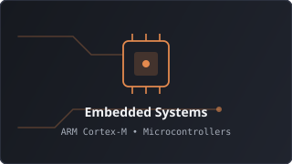
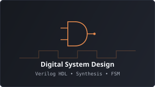
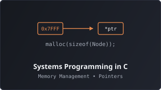

Open to collaborate & talk
Exploring machines from raw silicon up to software.
Hey there! I'm Samarth, an Electrical & Electronics Engineer who loves understanding how machines tick from the bare silicon and firmware up to high-level software.
"To truly love a machine, one must open it, understand its heart, its design & its soul."
I design and build whatever I can imagine—from solar-powered EV battery monitoring systems and bare-metal microcontroller drivers to digital circuits in Verilog and custom C applications from scratch. Sometimes I like to take apart electronic devices and fix them; the probability of them working again is about 70%, but it's always worth the exploration and learning.
- Embedded & HardwareESP32, STM32, Arduino, Raspberry Pi
- Systems & Low-LevelC, C++, Verilog, SystemVerilog, Python
- OS & EnvironmentFedora KDE, Pop!_OS, Ubuntu, Linux CLI
- Design & CraftDigital Logic, EDA / KiCAD, Video Editing
02Focus & Toolkit
Domains and technologies I enjoy diving into, from raw circuits and silicon up to operating systems and creative software.
◈ Embedded & Microcontrollers
Designing circuits, flashing microcontrollers, sensor interfacing, and writing firmware.
- ESP32
- STM32
- Arduino
- Raspberry Pi
- UART / I2C / SPI
- Sensors & Actuators
◈ Digital Electronics & HDL
Modeling digital circuits, logic synthesis, and hardware description languages.
- Verilog
- VHDL
- Digital Logic Design
- FPGA Fundamentals
- Combinational & Sequential Circuits
◈ Systems & Programming
Writing performant, clean low-level software and algorithmic foundations from scratch.
- C
- C++
- Python
- Shell Scripting
- Data Structures & Algorithms
◈ OS, Environment & Creative
Workstations, Linux distributions, build tools, and digital media production.
- Fedora KDE
- Pop!_OS & Ubuntu
- Git / GitHub
- GCC / Make / CMake
- Video Editing
I like the sweet spot where theory meets real hardware—where code directly manipulates physical registers, voltages, and timing diagrams. Whether debugging UART logs, simulating state machines, or compiling C programs, I appreciate tools that provide transparency and precision.
03Projects
Things I built to understand how they work inside. Spanning renewable hardware, microcontroller firmware, low-level C, and digital logic.
Solar-Powered EV Charging Station with BMS
Integrated Lithium-ion battery storage, microcontroller, and photovoltaic panels for efficient EV charging. Developed embedded firmware for real-time monitoring of cell voltage, thermal thresholds, charge cycles, and power transfer efficiency.
Solar-Powered Public Charging Station
Designed a public charging facility integrating solar PV arrays, custom DC-DC buck/boost converters, and Arduino telemetry. Conducted electrical load analysis and circuit simulations in MATLAB & Simulink.
Thermoelectric Generator using Peltier Modules
Harvested ambient electricity via the Seebeck effect by exploiting thermal gradients between overhead cold and hot water reserves, integrating energy storage and power management circuitry.
bibliothek
A library management system written in modern C++, emphasizing clean class architecture, robust data structures, and deterministic resource management.
Humble Beginnings — C
Deep dive into low-level systems programming in C from scratch. Exploring manual memory management, pointer arithmetic, struct alignment, and custom data structures.
Digital Logic & HDL Sandbox
Combinational and sequential digital circuit designs modeled in Verilog HDL. Includes multiplexers, finite state machines (FSM), registers, and testbench verification.
Arduino & Microcontroller Labs
Hands-on embedded experimentation with microcontrollers: hardware timers, interrupt service routines, sensor bus interfacing (I2C/SPI), and peripheral control.
genre-picker-WebApp
An intuitive web application for book genre recommendation and curation, focusing on accessible interface design and rapid user filtering.
scratchStore
A lightweight responsive storefront interface built from scratch to study CSS modern layout mechanics, media queries, and component architecture.
No projects found in this category.
04Writing & Articles
Notes, deep dives, and articles on electronics, systems programming, and things I build. Written with Chirpy by Jekyll.
-
Sep 2026
Understanding Hardware Registers: From C to Silicon
How bitwise operations in C translate directly to peripheral control registers in microcontrollers, and why memory-mapped I/O makes hardware feel like software.
-
Jun 2026
Why I Love Writing C from Scratch
Reflections on stripping away modern abstractions to understand raw pointers, stack vs heap allocation, and the beauty of deterministic execution.
-
Mar 2026
Demystifying Finite State Machines in Verilog
A practical guide to implementing Moore and Mealy state machines with clean synthesis-friendly idioms and testbench simulation techniques.
05Education
Academic background and foundational engineering coursework.
-
03/2026 — 07/2026
Post Graduate Diploma in VLSI Design & Verification
International Institute of Information Technology Bangalore (IIITB) • Bengaluru, IndiaSpecialized study in advanced digital design, ASIC/FPGA architecture, SystemVerilog, and formal verification methodologies.
- Focus on digital hardware modeling, timing closure, synthesis, and verification.
Key Coursework:
-
12/2022 — 06/2026
B.E. in Electrical & Electronics Engineering
Government Engineering College Mosalehosahalli • Hassan, KarnatakaComprehensive engineering curriculum across electrical power, microcontrollers, control systems, and electronics. CGPA: 7.9 / 10.
- President & Founder of ELECTROSPHERE & VEDA (VLSI & Embedded Design Association).
- Branch Cultural Head & Placement Co-ordinator.
- Hands-on laboratory capstones in embedded control, circuit simulation, and power systems.
Key Coursework:
-
2020 — 2022
Higher Secondary Education (PCMB)
Times P.U. College • C.R. Patna, KarnatakaPre-university curriculum focusing on Physics, Chemistry, Mathematics, and Biology. CGPA: 8.2 / 10.
- Developed strong analytical foundations in physics, mathematics, and logic.
-
2019 — 2020
Secondary School Leaving Certificate (S.S.L.C)
Government High School Megalakeri • C.R. Patna, KarnatakaCore secondary education with academic distinction. CGPA: 9.0 / 10.
- Elected School President — Led student body and school activities.
06Certifications
Verified technical credentials, specialized hardware workshops, and professional courses.

Advanced Drone Technology (Air Taxi) Workshop
BSERC-DRONE-094
Summer School on Digital Hardware Design with Verilog
IEEE-VLOG-2025
Embedded Systems & Microcontroller Architecture
EMB-ARCH-581207Contact
Whether you want to discuss embedded systems, hardware projects, C/C++, or just say hi—my inbox is always open.
- GitHub
- Blog & RSS
Always keen to talk about hardware architectures, microcontrollers, low-level software, or exciting collaborative ideas.